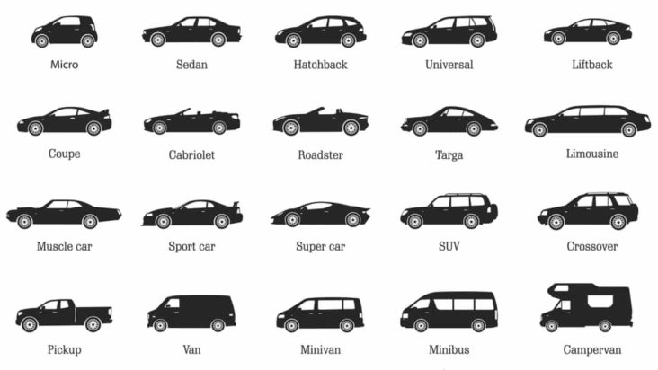

Hablare sobre la gran importancia y la dependencia que nosotros le tenemos a este medio de transporte, también sobre mejores autos según su segmente u otras cuestiones.
Desarrollo
Los automoviles hoy en día son parte fundamental de nuestra vida, sin tener uno propia hay muchas alternativas para poder transportarse, como el uso de transporte publico y así. La evolucion y necesidad de estos han crecido exponencialmente.
Motivación
Yo escogi este tema porqué lo que quiero estudiar es una ingenieria automotriz, tengo conocimiento y me gusta el tema.
Autos mas ahorradores de gasolina en México
29/10/2021
Peugeot 208
Hyundai Grand i 10
Nissan X-Trail Hybrid
Toyota Yaris R
Suzuki Ciaz
Toyota Yaris
Ford Figo Sedán
SEAT Ibiza FR 1.0
Mazda 2
Chevrolet Aveo
En este rank hago una lista de los automoviles mas economicos o ahorradores en gasolina del año 2021. Los autos que se presentan en la lista no gastan mucha gasolina, ya que tienen mas que un destacable rendimiento o algunos son hibridos.
Cada una de estas paginas de youtube se dedica a hacer contenido, videos, reviews y cosas así en sus canales y paginas. Hacen un contenido bastante interesante e informativo.
Autos hibridos vs autos de combustión
20/02/2022
Ponemos a prueba el ahorro de gasolina
En este vídeo vamos a hacer una prueba que aclarará MUCHAS dudas sobre el consumo de gasolina entre un coche híbrido y un coche de combustión, realizando un recorrido que podría hacer cualquier persona por ciudad.
Para la prueba contamos con un experto en motor y dos coches: un Kona híbrido y un Kona de combustión diésel.
¿Cuántos gastará cada coche en un recorrido de 50 kilómetros con retenciones en autovía, calles urbanas y vías interurbanas?
Tipos de autos y sus caracteristicas
20/02/2022
En esta parte no abarcare mucho del tema, ya que hay muchos tipos de autos, asi que solo hablar ede los principales.
Sedán
También conocidos como el Segmento C, se encuentran entre los vehículos domésticos más populares, y son autos de cuatro (o 5) plazas y techo fijo y duro. Se dividen en 3 cuerpos: capó, habitáculo y cajuela. Son un excelente primer vehículo y tienen un perfil familiar y compacto, aunque existen algunos más lujosos o deportivos .
Hatchback
La característica principal de este tipo de autos es la Puerta Trasera de la cajuela, que está integrada al espacio de los pasajeros. La cajuela suele denominarse puerta, y se suma al conteo de las puertas laterales, además incluye el vidrio trasero que podría tener una posición horizontal, característica de este tipo de autos compactos.
SUV
Las camionetas SUV están en boca de todos debido a que resultan muy útiles para transitar en la ciudad gracias a su espacioso interior y características en materia de tecnología, seguridad y conectividad.
En español, el nombre de estas camionetas sería Vehículo Utilitario Deportivo y se trata de vehículos todo terreno que combinan potencia con cualidades de un auto de turismo.
En un SUV puedes encontrar la tracción poderosa con una suspensión alta característica de un todoterreno, combinada con la comodidad y tecnología de un auto de turismo.
Deportivos
Los carros deportivos tienen una velocidad máxima superior al promedio, mejor adherencia al asfalto, un sistema de frenado más poderoso y un diseño aerodinámico que favorece su velocidad. Los puedes encontrar de diferentes tamaños con capacidad para 2 o 4 pasajeros y 2 o 4 puertas. Las carrocerías que se asocian con estos vehículos suelen ser la coupé y descapotable.
Minivan
Una minivan se clasifica como un vehículo que se construye sobre la plataforma de un automóvil pequeño. Una característica simple que lo distingue de otras clasificaciones de automóviles es su fácil uso, puertas traseras deslizantes o con bisagras, y su carrocería que se encuentra más baja al suelo en comparación con los SUV o camiones. En cuanto a la cabina, tiene 3 filas de asientos que pueden acomodar entre 8 y 9 pasajeros (incluido el conductor). También tiene suficiente espacio para la cabeza para que sea más fácil para los pasajeros entrar y salir del vehículo con facilidad. Solo dentro de la clasificación de vehículos monovolumen, hay diferentes versiones, como un capó de un volumen sin capó, uno y un volumen donde el capó está medio modificado y dos volúmenes con capó completo. Además, las minivans vienen en diferentes tamaños que pueden variar desde micro, compactas, medianas hasta una minivan de tamaño completo.

¿El auto perfecto existe?
09/06/2022
Muchos tienen el sueño de tener ese auto que tanto desean, por una u otra razón, que si fue el auto que tenian sus padres, fue el auto de rapidos y furiosos, porque es muy rapido, etc. Pero nunca piensan si ese auto les serviria para sus necesidad o sería una molestia. El auto perfecto no existe, ya que cada persona tiene diferentes necesidades y el uso que le da es diferente, asi que no se podría utilizar ese termino generalizando a un auto como perfecto. Por ejemplo, si un padre de familia cree que el auto perfecto es un "Ferrai La Ferrari" es el auto perfecto y un dia llega a probar ese mismo auto y es el unico que tenbdría como uso, no le serviria para lo que ocupa, por ejemplo, recoger a sus hijos de la escuela, ir de compras, salir de viaje, etc. Eso sin pensar el costoso mantenimiento y la cantidad de permisos que debe de tener y pagar para usarlo y determinar el uso. Personalmente, creo que el auto perfecto se acopla a las necesidades de una persona.
 Introducción al tema
Introducción al tema
.jpg)